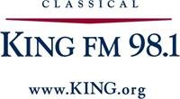

<table style="border:none;">
    <tr>
        <td>
            Selections for our upcoming concert will be aired on <a href="http://www.king.org/">Classical King FM 98.1</a>
            as part of their <a href="http://www.king.org/nwfocus" target="_blank">
                Northwest Focus
            </a> program. Tune in to 98.1 FM on these dates and approximate times:
            <ul>
                <li>
                    Wednesday, November 25
                    <ul>
                        <li>Johann Strauss Jr.: <span style="font-style:italic;">The Emperor Waltz</span>, 9:00pm</li>
                    </ul>
                </li>
                <li>
                    Monday, November 30
                    <ul>
                        <li>Handel:  <span style="font-style:italic;">Messiah: Hallelujah!</span>, 8:27pm</li>
                        <li><span style="font-style:italic;">Silent Night</span>, 8:55pm</li>
                    </ul>
                </li>
                <li>
                    Tuesday, December 1
                    <ul>
                        <li>Anderson:  <span style="font-style:italic;">Sleigh Ride</span>, 8:43pm</li>
                        <li><span style="font-style:italic;">O Come, All Ye Faithful</span>, 9:18pm</li>
                    </ul>
                </li>
            </ul>
            You can also catch the program
            <a href="http://v5.player.abacast.com/v5.1/player/index.php?uid=6936" target="_blank">online worldwide</a> at those times.
        </td>
        <td style="vertical-align:top;">
            <a href="http://www.king.org" target="_blank">
                
            </a>
        </td>
    </tr>
</table>
<br />
